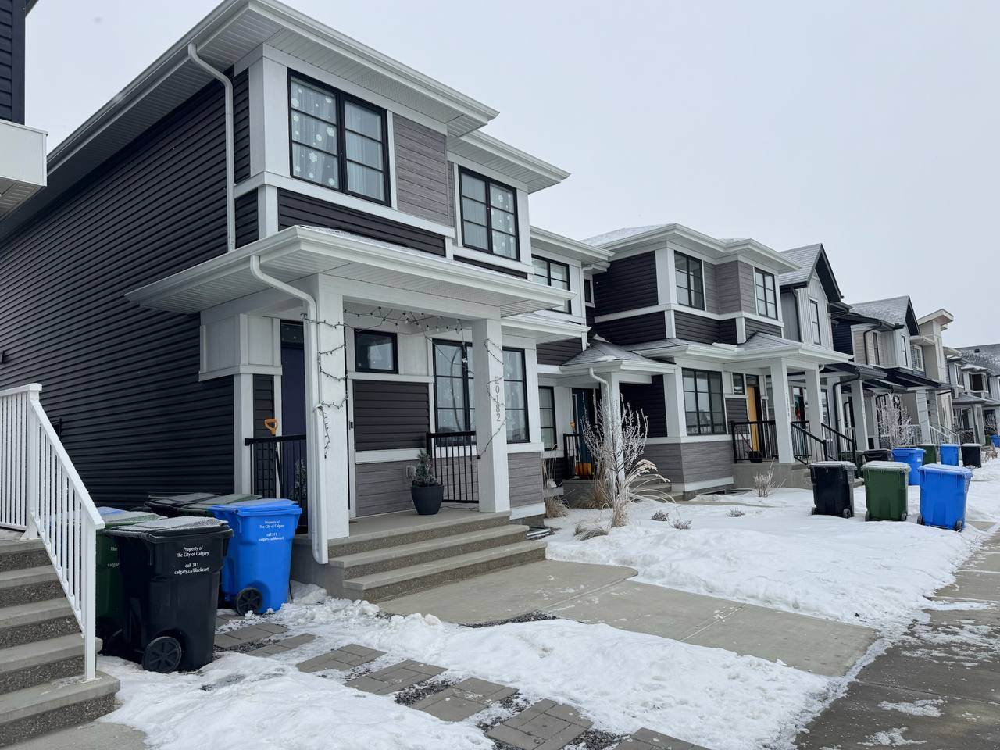

CALGARY & SURROUNDING AREAS
A better home.
Inside & out.
From a new exterior to a fresh room or a list of small repairs. TwinLine brings practical solutions and careful workmanship to your next project.
Residential & commercial • Small jobs welcome

ExteriorsInterior updatesRepairs & maintenance
ONE TEAM TO CALL
Big improvements.
Small details. All welcome.
Choose the service you need, or send us your whole list. We’ll help define the scope and the next steps.
01 / EXTERIOR
Protect & refresh.
Siding, roofing, soffit, fascia, gutters, stucco, stone, decks and fences.
Exterior services →02 / INTERIORMake it feel like home.
Drywall, painting, flooring, tile, doors, trim, kitchen, bath and basement updates.
Interior services →03 / MAINTENANCEFinish your to-do list.
Small repairs, assembly, mounting, caulking, property maintenance and cleaning.
Handyman & cleaning →THE WORK SPEAKS
Built with care.
A CLEAR PATH FROM IDEA TO FINISH
Let’s keep it simple.
01
Show us the project.
Share photos, your location and what you would like to change.
02
Agree on the scope.
We discuss the work, materials and timing before you decide.
03
Get it done.
Careful work, attention to the details and a final walkthrough.
LET’S GET IT DONE
What’s on your project list?
Send a few photos and tell us what you have in mind.